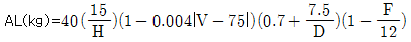
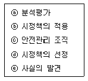
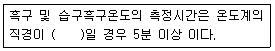
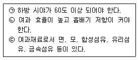
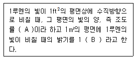

산업위생관리기사 (2015-03-08 기출문제)
1과목: 산업위생학개론
1. 다음 중 작업강도에 영향을 미치는 요인으로 틀린 것은?
- 작업밀도가 적다.
- 대인 접촉이 많다.
- 열량소비량이 크다.
- 작업대상의 종류가 많다.
(정답률: 80%)

2. 어떤 사업장에서 1000명의 근로자가 1년동안 작업하던 중 재해가 40건 발생하였다면 도수율은 얼마인가?(단, 근로자는 1일 8시간 씩 연간 300일을 근무하였다.)
- 12.3
- 16.7
- 24.4
- 33.4
(정답률: 86%)
3. 다음 중 전신피로에 있어 생리학적 원인에 속하지 않는 것은?
- 젖산의 감소
- 산소공급의 부족
- 글리코겐량의 감소
- 혈중 포도당 농도의 저하
(정답률: 83%)
4. 다음 중 노출기준에 피부(skin) 표시를 첨부하는 물질이 아닌 것은?
- 옥탄올-물 분배계수가 높은 물질
- 반복하여 피부에 도포했을 때 전신작용을 일으키는 물질
- 손이나 팔에 의한 흡수가 몸 전체에서 많은 부분을 차지하는 물질
- 동물을 이용한 급성중독 실험결과, 피부 흡수에 의한 치사량이 비교적 높은 물질
(정답률: 53%)
5. 근로자로부터 40cm 떨어진 물체(9kg)를 바닥으로부터 150cm 들어 올리는 작업을 1분에 5회씩 1일 8시간 실시하였을 때 감시기준(AL, action limit)은 얼마인가?

(단, H는 수평거리, V는 수직거리,D 는 이동거리. F는 작업빈도계수이다.)- 2.6kg
- 3.6kg
- 4.6kg
- 5.6kg
(정답률: 45%)
6. 국내 직업병 발생에 대한 설명 중 틀린 것은?
- 1994년까지는 직업병 유소견자 현황에 진폐증이나 차지하는 비율이 66~80% 정도로 가장 높았고, 여기에 소음성 난청을 합치면 대략 90%가 넘어 직업병 유소견자의 대부분은 진폐와 소음 난청이었다.
- 1988년 15살의 “문송면”군은 온도계 제조회사에 입사한 지 3개월 만에 수은에 중독되어 사망에 이르렀다.
- 경기도 화성시 모 디지털 회사에서 근무하는 외국인(태국) 근로자 8명에게서 노말헥산의 과다노출에 따른 다발성 말초신경염이 발생되었다.
- 모 전자부품 업체에서 크실렌이라는 유기용제에 노출되어 생리 중단과 ‘재생불량성빈혈’이라는 건강상 장해가 일어나 사회문제가 되었다.
(정답률: 72%)
7. 다음 중 직업적성을 알아보기 위한 생리적 기능검사와 가장 거리가 먼 것은?
- 체력검사
- 감각기능검사
- 심폐기능검사
- 지각동작기능 검사
(정답률: 73%)
8. 미국산업위생학회 등에서 산업위생전문가들이 지켜야 할 윤리강령을 채택한 바 있는데 다음 중 전문가로서의 책임에 해당되지 않는 것은?
- 기업체의 기밀은 누설하지 않는다.
- 전문 분야로서의 산업위생 발전에 기여한다.
- 근로자, 사회 및 전문분야의 이익을 위해 과학적 지식을 공개한다.
- 위험요인의 측정, 평가 및 관리에 있어서 외부의 압력에 굴하지 않고 중립적 태도를 취한다.
(정답률: 67%)
9. 다음 중 사고예방대책의 기본원리가 다음과 같을 때 각 단계를 순서대로 올바르게 나열한 것은?

- ⓒ→ⓔ→ⓐ→ⓓ→ⓑ
- ⓒ→ⓔ→ⓓ→ⓑ→ⓐ
- ⓔ→ⓒ→ⓓ→ⓑ→ⓐ
- ⓔ→ⓓ→ⓒ→ⓑ→ⓐ
(정답률: 80%)
10. 다음 중 사무실 공기관리 지침상 관리대상 오염물질의 종류에 해당 하지 않는 것은?(2020년 개정된 기준 적용됨)
- 라돈
- 호흡성분진(RSP)
- 총부유세균
- 일산화탄소(CO)
(정답률: 55%)
11. 다음 중 산업위생의 목적으로 가장 적합하지 않은 것은?
- 작업조건을 개선한다
- 근로자의 작업능률을 향상시킨다.
- 근로자의 건강을 유지 및 증진시킨다.
- 유해한 작업환경으로 일어난 질병을 진단한다.
(정답률: 83%)
12. 다음 중 유해인자와 그로 인하여 발생되는 직업병이 올바르게 연결된 것은?
- 크롬 – 간암
- 이상기압 - 침수족
- 석면 - 악성중피종
- 망간 – 비중격천공
(정답률: 85%)
13. 다음 중 Flex-Time제를 가장 올바르게 설명한 것은?
- 주휴 2일제로 주당 40시간 이상의 근무를 원칙으로 하는 제도
- 하루 중 자기가 편한 시간을 정하여 자유 출·퇴근하는 제도
- 작업상 전 근로자가 일하는 중추시간(core time)을 제외하고 주서 자유롭게 출·퇴근하는 제도
- 연중 4주간의 연차 휴가를 정하여 근로자가 원하는 시기에 휴가를 갖는 제도
(정답률: 83%)
14. 다음 중 산업안전보건법상 “물질안전보건자료의 작성과 비치가 제외되는 대상물질”이 아닌 것은?
- “농약관리법”에 따른 농약
- “폐기물관리법”에 따른 폐기물
- “대기관리법”에 따른 대기오염물질
- “식품위생법”에 따른 식품 및 식품첨가물
(정답률: 74%)
15. 다음 중 산업안전보건법상 “충격소음작업”에 해당하는 것은? (단, 작업은 소음이 1초 이상의 간격으로 발생한다.)
- 120데시벨을 초과하는 소음이 1일 1만회 이상 발생되는 작업
- 125데시벨을 초과하는 소음이 1일 1천회 이상 발생되는 작업
- 130데시벨을 초과하는 소음이 1일 1백회 이상 발생되는 작업
- 140데시벨을 초과하는 소음이 1일 10회 이상 발생되는 작업
(정답률: 83%)
16. 다음 중 인간공학에서 최대작업영역(maximum area)에 대한 설명으로 가장 적절한 것은?
- 허리의 불편 없이 적절히 조작할 수 있는 영역
- 팔과 다리를 이용하여 최대한 도달할 수 있는 영역
- 어깨에서부터 팔을 뻗어 도달할 수 있는 영역
- 상완을 자연스럽게 몸에 붙인 채로 전완을 움직일 때 도달하는 영역
(정답률: 79%)
17. 다음 중 영국의 외과의사 Pott에 의하여 최초로 발견된 직업성 암은?
- 음낭암
- 비암
- 폐암
- 간암
(정답률: 93%)
18. Diethyl ketone(TLV=200ppm)을 사용하는 근로자의 작업시간이 9시간일 때 허용기준을 보정하였다. OSHA보정법과 Brief and Scala 보정법을 적용하였을 경우 보정된 허용기준치 간의 차이는?
- 5.⑤
- 11.11
- 22.22
- 33.33
(정답률: 82%)
19. 금속이 용해되어 액상 물질로 되고, 이것이 가스상 물질로 기화된 후 다시 응축되어 발생하는 고체입자를 무엇이라 하는가?
- 에어로졸(aerosol)
- 흄(fume)
- 미스트(mist)
- 스모그(smog)
(정답률: 81%)
20. 작업대사율(RMR) 계산시 직접적으로 필요한 항목과 가장 거리가 먼 것은?
- 작업시간
- 안정시 열량
- 기초대사량
- 작업에 소모된 열량
(정답률: 75%)
2과목: 작업위생측정 및 평가
21. 검지관 사용시 장단점으로 가장 거리가 먼 것은?
- 숙련된 산업위생전문가가 아니더라도 어느 정도만 숙지하면 사용 할 수 있다.
- 민감도가 낮아 비교적 고농도에 적용이 가능하다.
- 특이도가 낮아 다른 방해물질의 영향을 받기 쉽다.
- 측정대상물질의 동정 없이 측정이 용이하다.
(정답률: 82%)
22. 어느 옥외 작업장의 온도를 측정한 결과, 건구온도 30℃, 자연습 구온도 26℃, 흑구온도 36℃를 얻었다. 이 작업장의 WBGT는? (단, 태양광선이 내리쬐지 않는 장소)
- 28℃
- 29℃
- 30℃
- 31℃
(정답률: 81%)
23. 정량한계(LOQ)에 관한 설명으로 가장 옳은 것은?
- 검출한계의 2배로 정의
- 검출한계의 3배로 정의
- 검출한계의 5배로 정의
- 검출한계의 10배로 정의
(정답률: 72%)
24. 수은(알킬수은 제외)의 노출기준은 0.⑤mg/m3이고 증기압은 0.0029mmHg이라면 VHR(Vapor Hazard Ratio)은? (단, 25℃, 1기압 기준, 수은 원자량 200.6)
- 약 330
- 약 430
- 약 530
- 약 630
(정답률: 47%)
25. 다음 중 2차 표준기구인 것은?
- 유리 피스톤 미터
- 폐활량계
- 열선 기류계
- 가스 치환병
(정답률: 74%)
26. 다음은 고열측정에 관한 내용이다. ( )안에 옳은 내용은? (단, 고시 기준)

- 7.5센티미터 또는 5센티미터
- 15센티미터
- 3센티미터 이상 5센티미터 미만
- 15센티미터 미만
(정답률: 76%)
27. 입자상 물질의 측정 매체인 MCE (Mixed cellulose ester membrane) 여과지에 관한 설명으로 틀린 것은?
- 산에 쉽게 용해된다.
- MCE여과지의 원료인 셀룰로오스는 수분을 흡수하는 특성을 가지고 있다.
- 시료가 여과지의 표면 또는 표면 가까운 데에 침착되므로 석면, 유리섬유 등 현미경 분석을 위한 시료채취에 이용 된다.
- 입자상 물질에 대한 중량분석에 주로 적용된다.
(정답률: 75%)
28. 알고 있는 공기 중 농도를 만드는 방법인 Dynamic Method에 관한 내용으로 틀린 것은?
- 만들기가 복잡하고 가격이 고가이다.
- 온습도 조절이 가능하다.
- 소량의 누출이나 벽면에 의한 손실은 무시할 수 있다.
- 대게 운반용으로 제작하기가 용이하다.
(정답률: 84%)
29. ‘변이계수’에 관한 설명으로 틀린 것은?
- 평균값의 크기가 0에 가까울수록 변이계수의 의의는 커진다.
- 측정단위와 무관하게 독립적으로 산출된다.
- 변이계수는 %로 표현된다.
- 통계집단의 측정값들에 대한 균일성, 정밀성 정도를 표현하는 것이다.
(정답률: 72%)
30. 어떤 음의 발생원의 Sound Power가 0.006W이면 이때 음향 파워레벨은?
- 92dB
- 94dB
- 96dB
- 98dB
(정답률: 69%)
31. 직경 분립 충돌 (cascade impactor)의 특성을 설명한 것으로 옳지 않은 것은?
- 비용이 저렴하고 채취준비가 간단하다.
- 공기가 옆에서 유입되지 않도록 각 충돌기의 철저한 조립과 장착이 필요하다.
- 입자의 질량크기 분포를 얻을 수 있다.
- 흡입성, 흉곽성, 호흡성 입자의 크기별 분포와 농도를 얻을 수 있다.
(정답률: 79%)
32. 유형, 측정시간, 회수율 분석에 의한 오차가 각각 10%, 5%, 10%, 5%일 때의 누적오차와 회수율에 의한 오차를 10%에서 7%로 감소(유형, 측정시간, 분석에 의한 오차율은 변화없음)시켰을 때 누적오차와의 차이는?
- 약 1.2%
- 약 1.7%
- 약 2.6%
- 약 3.4%
(정답률: 76%)
33. 실리카겔관이 활성탄관에 비하여 가지고 있는 장점과 가장 거리가 먼 것은?
- 극성물질을 채취한 경우 물, 메탄올 등 다양한 용매로 쉽게 탈착된다.
- 추출액이 화학분석이나 가기분석에 방해물질로 작용하는 경우가 많지 않다.
- 매우 유독한 이황화탄소를 탈착 용매로 사용하지 않는다.
- 수분을 잘 흡수하여 습도에 대한 민감도가 높다.
(정답률: 62%)
34. 로타미터(Rotameter)에 관한 설명으로 알맞지 않는 것은?
- 유량을 측정하는데 가장 흔히 사용되는 기기이다.
- 바닥으로 갈수록 점점 가늘어지는 수직관과 그 안에서 자유롭게 상하로 움직이는 부자로 이루어진다.
- 관은 유리나 투명 플라스틱으로 되어있으며 눈금이 새겨져 있다.
- 최대 유량과 최소 유량의 비율이 100 : 1 범위이고 대부분 ±1.0%이내의 정확성을 나타낸다.
(정답률: 80%)
35. 임핀저(impinger)로 작업장 내 가스를 포집하는 경우, 첫 번째 임핀저의 포집효율이 90%이고 두번째 임핀저의 포집효율은 50%이었다. 두 개를 직렬로 연결하여 포집하면 전체 포집효율은?
- 93%
- 95%
- 97%
- 99%
(정답률: 72%)
36. 화학공장의 작업장 내에 먼지 농도를 측정하였더니 5, 6, 5, 6, 6, 6, 4, 8, 9, 8 ppm이었다. 이러한 측정치의 기하평균(ppm)은?
- 5.13
- 5.83
- 6.13
- 6.83
(정답률: 73%)
37. 공장 내부에 소음 (대당 PWL = 85dB)을 발생시키는 기계가 있다. 이 기계 2대가 동시에 가동될 때 발생하는 PWL의 합은?
- 86 dB
- 88dB
- 90 dB
- 92dB
(정답률: 82%)
38. 용접작업 중 발생되는 용접흄을 측정하기 위해 사용할 여과지를 화학천칭을 이용해 무게를 재었더니 70.11mg이었다. 이 여과지를 이용하여 2.5L/min의 시료채취 유량으로 120분간 측정을 실시한 후 잰 무게는 75.88mg이었다면 용접흄의 농도는?
- 약 13mg/m3
- 약 19mg/m3
- 약 23mg/m3
- 약 28mg/m3
(정답률: 72%)
39. 세척제로 사용하는 트리클로로에 틸렌의 근로자 노충농도 측정을 위해 과거의 노출 농도를 조사해 본 결과, 평균 90 ppm이었다. 활성탄 관을 이용하여 0.17ℓ/분으로 채취하고자 할 때 채취하여야 할 최소한의 시간(분)은? (단, 25℃, 1기압 기준, 트리클로로 에틸렌의 분자량은 131.39, 가스크로마토그래피의 정량한계는 시료 당 0.4mg)
- 4.9분
- 7.8분
- 11.4분
- 13.7분
(정답률: 52%)
40. 흡수용액을 이용하여 시료를 포집 할 때 흡수효율을 높이는 방법과 거리가 먼 것은?
- 용액의 온도를 높여 오염물질을 휘발 시킨다.
- 시료채취유량을 낮춘다.
- 가는 구멍이 많은 Fritted 버블러 등 채취효율이 좋은 기구를 사용한다.
- 두 개 이상의 버블러를 연속적으로 연결하여 용액의 양을 늘린다.
(정답률: 72%)
3과목: 작업환경관리대책
41. 톨루엔을 취급하는 근로자의 보호구 밖에서 측정한 톨루엔 농도가 30ppm이었고 보호구 안의 농도가 2 ppm으로 나왔다면 보호계수(Protection factor, PF) 값은? (단, 표준 상태 기준)
- 15
- 30
- 60
- 120
(정답률: 79%)
42. 귀마개의 장단점과 가장 거리가 먼 것은?
- 제대로 착용하는데 시간이 걸린다.
- 착용여부 파악이 곤란하다.
- 보안경 착용시 차음효과가 감소 한다.
- 귀마개 오염시 감염 될 가능성이 있다.
(정답률: 85%)
43. 대치(substitution)방법으로 유해 작업환경을 개선한 경우로 적절하지 않은 것은?
- 유연휘발유를 무연휘발유로 대치
- 블라스팅 재료로서 모래를 철구슬로 대치
- 야광시계의 자판을 라듐에서 인으로 대치
- 페인트 희석제를 사염화탄소에서 석유나프타로 대치
(정답률: 73%)
44. 송풍관(duct) 내부에서 유속이 가장 빠른 곳은? (단, d는 직경임)
- 위에서 1/10d 지점
- 위에서 1/5d 지점
- 위에서 1/3d 지점
- 위에서 1/2d 지점
(정답률: 73%)
45. 원심력 제진장치인 사이크론에 관한 설명 중 옳지 않은 것은?
- 함진가스에 선회류를 일으키는 원심력을 이용한다.
- 비교적 적은 비용으로 제진이 가능하다.
- 가동부분이 많은 것이 기계적인 특징이다.
- 원심력과 중력을 동시에 이용하기 때문에 입경이 크면 효율적이다.
(정답률: 41%)
46. 공기정화장치의 한 종류인 원심력 제진장치의 분리계수(separation fator)에 대한 설명으로 옳지 않은 것은?
- 분리계수는 중력가속도와 반비례한다.
- 사이클론에서 입자에 작용하는 원심력을 중력으로 나눈 값을 분리계수라 한다.
- 분리계수는 입자의 접선방향속도에 반비례한다.
- 분리계수는 사이클론의 원추하부 반경에 반비례한다.
(정답률: 51%)
47. 다음과 같은 조건에서 오염물질의 농도가 200 ppm까지 도달하였다가 오염물질 발생이 중지되었을때, 공기 중 농도가 200 ppm에서 19 ppm으로 감소하는데 얼마 나 걸리는가? (단, 1차반응, 공간부피 V=3000m3, 환기량 Q=1.17m3/sec)
- 약 89분
- 약 100분
- 약 109분
- 약 115분
(정답률: 67%)
48. 작업환경관리의 공학적 대책에서 기본적 원리인 대체(substitution) 와 거리가 먼 것은?
- 자동차산업에서 납을 고속회전 그라인더로 깎아 내던 작업을 저오실레이팅(osillating)type sander 작업으로 바꾼다.
- 가연성 물질 저장시 사용하던 유리병을 안전한 철제 통으로 바꾼다.
- 방사선 동위원소 취급장소를 밀폐하고, 원격장치를 설치한다.
- 성냥제조시 황린 대신 적린을 사용하게 한다.
(정답률: 58%)
49. 0℃, 1기압인 표준상태에서 공기의 밀도가 1.293kg/Sm3라고 할 때 25℃, 1기압에서의 공기밀도는 몇kg/m3인가?
- 0.903kg/m3
- 1.085kg/m3
- 1.185kg/m3
- 1.411kg/m3
(정답률: 51%)
50. 덕트 합류시 균형유지 방법 중 설계에 의한 정압균형유지법의 장·단점이 아닌 것은?
- 설계시 잘못된 유량을 고치기가 용이함
- 설계가 복잡하고 시간이 걸림
- 최대 저항 경로 선정이 잘못되어도 설계시 쉽게 발견할 수 있음
- 때에 따라 전체 필요한 최소유량 보다 더 초과될 수 있음
(정답률: 62%)
51. 국소배기장치에 관한 주의사항으로 가장 거리가 먼 것은?
- 배기관은 유해물질이 발산하는 부위의 공기를 모두 빨아낼 수 있는 성능을 것
- 흡인되는 공기가 근로자의 호흡기를 거치지 않도록 할 것
- 먼지를 제거할 때에는 공기속도를 조절하여 배기관 안에서 먼지가 일어나도록 할 것
- 유독물질의 경우에는 굴뚝에 흡인장치를 보강할 것
(정답률: 84%)
52. 어느 실내의 길이, 폭, 높이가 각 각 25m, 10m, 3m 이며 실내에 1시간당 18회의 환기를 하고자 한다. 직경 50cm의 개구부를 통하여 공기를 공급하고자 하면 개구부를 통과하는 공기의 유속 (m/sec)은?
- 13.7
- 15.3
- 17.2
- 19.1
(정답률: 37%)
53. 어느 작업장에서 크실렌(Xylene) 을 시간당 2리터(2L/hr) 사용할 경우 작업장의 희석환기량(m3/min)은? 단, 크실렌의 비중은 0.88, 분자량은 106, TLV는 100 ppm이고 안전계수 K는 6, 실내온도는 20℃이다)
- 약 200
- 약 300
- 약 400
- 약 500
(정답률: 57%)
54. 강제환기를 실시할 때 환기효과를 제고시킬 수 있는 방법으로 틀린 것은?
- 공기배출구와 근로자의 작업위치 사이에 오염원이 위치하지 않도록 하여야 한다.
- 배출구가 창문이나 문 근처에 위치하지 않도록 한다.
- 오염물질 배출구는 가능한 한 오염원으로부터 가까운 곳에 설치하여 ‘점 환기’ 효과를 얻는다.
- 공기가 배출되면서 오염장소를 통과하도록 공기배출구와 유입구 와 위치를 선정한다.
(정답률: 79%)
55. 작업장내 열부하량이 10000kcal/h이며, 외기온도 20℃ 작업장내 온도는 35℃이다. 이 때 전체 환기를 위한 필요한 환기량(m3/min)은? (단, 정압비열은 0.3kcal/m3˙℃)
- 약 37
- 약 47
- 약 57
- 약 67
(정답률: 47%)
56. 1기압 동점성계수(20℃)는 1.5 x 10-5(m2/sec)이고 유속은 10m/sec, 관반경은 0.125m일 때 Reynold 수는?
- 1.67 × 105
- 1.87 × 105
- 1.33 × 104
- 1.37 × 105
(정답률: 52%)
57. 유입계수 Ce=0.82인 원형 후드가있다. 덕트의 원면적이 0.0314m2이고 필요 환기량 Q는 30m3/min 이라고 할 때 후드정압은? (단, 공기밀도 1.2kg/m3 기준)
- 16 mmH2O
- 23 mmH2O
- 32 mmH2O
- 37 mmH2O
(정답률: 57%)
58. 외부식 후드(포집형 후드)의 단점으로 틀린 것은?
- 포위식 후드보다 일반적으로 필요 송풍량이 많다.
- 외부 난기류의 영향을 받아서 흡인효과가 떨어진다.
- 기류속도가 후드주변에서 매우 빠르므로 유기용제나 미세 원료 분말 등과 같은 물질의 손실이 크다.
- 근로자가 발생원과 환기시설 사이에서 작업할 수 없어 여유계수가 커진다.
(정답률: 63%)
59. 방진 마스크의 적절한 구비조건만으로 짝지은 것은?

- ㉠, ㉡
- ㉡, ㉢
- ㉠, ㉢
- ㉠, ㉡, ㉢
(정답률: 75%)
60. 어떤 작업장의 음압수준이 100dB(A)이고 근로자가 NRR이 19인 귀마개를 착용하고 있다면 차음효과는? (단, OSHA 방법 기준)
- 2dB(A)
- 4dB(A)
- 6dB(A)
- 8dB(A)
(정답률: 81%)
4과목: 물리적유해인자관리
61. 고압환경의 영향 중 2차적인 가압 현상에 관한 설명으로 틀린 것은?
- 4기압 이상에서 공기 중의 질소가스는 마취 작용을 나타낸다.
- 이산화탄소의 증가는 산소의 독성과 질소의 마취 작용을 촉진시킨다.
- 산소의 분압이 2기압을 넘으면 산소중독증세가 나타난다.
- 산소중독은 고압산소에 대한 노출이 중지되어도 근육경련, 환청 등 후유증이 장기간 계속된다.
(정답률: 75%)
62. 다음 중 진동증후군(HAVS)에 대한 스톡홀름 워크숍의 분류로서 틀린 것은?
- 진동증후군의 단계를 0부터 4까지 5단계로 구분하였다.
- 1단계는 가벼운 증상으로 하나 또는 그 이상의 손가락 끝부분이 하얗게 변하는 증상을 의미한다.
- 3단계는 심각한 증상으로 하나 또는 그 이상의 손가락 가운뎃마디 부분까지 하얗게 변하는 증상이 나타나는 단계이다.
- 4단계는 매우 심각한 증상으로 대부분의 손가락이 하얗게 변하는 증상과 함께 손끝에서 땀의 분비가 제대로 일어나지 않는 등의 변화가 나타나는 단계이다.
(정답률: 74%)
63. 다음 중 소음대책에 대한 공학적 원리에 대한 설명으로 틀린 것은?
- 고주파음은 저주파음보다 격리 및 차폐로써의 소음감소 효과가 크다.
- 넓은 드라이브 벨트는 가는 드라이브 벨트로 대치하여 벨트 사이에 공간을 두는 것이 소음 발생을 줄일 수 있다.
- 원형 톱날에는 고무 코팅재를 톱날측면에 부착시키면 소음의 공명현상을 줄일 수 있다.
- 덕트내에 이음부를 많이 부착하면 흡음효과로 소음을 줄일 수 있다.
(정답률: 68%)
64. 다음 중 소음성 난청에 영향을 미치는 요소에 대한 설명으로 틀린 것은?
- 음압수준이 높을수록 유해하다.
- 저주파음이 고주파음보다 더 유해하다.
- 계속적노출이 간헐적노출보다 더 유해하다.
- 개인의 감수성에 따라 소음반응이 다양하다.
(정답률: 81%)
65. 전리방사선 중 a입자의 성질을 가장 잘 설명한 것은?
- 전리작용이 약하다.
- 투과력이 가장 강하다.
- 전자핵에서 방출되며 양자 1개를 가진다.
- 외부조사로 건강상의 위해가 오는 일은 드물다.
(정답률: 51%)
66. 다음 중 열사병(heat stroke)에 관한 설명으로 옳은 것은?
- 피부는 차갑고, 습한 상태로 된다.
- 지나친 발한에 의한 탈수와 염분 소실이 원인이다.
- 보온을 시키고, 더운 커피를 마시게 한다.
- 뇌 온도의 상승으로 체온조절중 추의 기능이 장해를 받게 된다.
(정답률: 81%)
67. 다음 중 눈에 백내장을 일으키는 마이크로파의 파장 범위로 가장 적절한 것은?
- 1000 ~ 10000MHz
- 40000 ~ 100000MHz
- 500 ~ 700MHz
- 100 ~ 1400MHz
(정답률: 70%)
68. 다음의 빛과 밝기의 단위를 설명 한 것으로 옳은 것은?

- A : 푸트캔들(Footcandle), B : 럭스(Lux)
- A : 럭스(Lux), B : 푸트캔들(Footcandle)
- A : 캔들(Candle), B : 럭스(Lux)
- A : 럭스(Lux), B : 캔들(Candle)
(정답률: 75%)
69. 1 sone 이란 몇 Hz에서, 몇 dB의 음압레벨을 갖는 소음의 크기를 말하는가?
- 2000Hz, 48dB
- 1000Hz, 40dB
- 1500Hz, 45dB
- 1200Hz, 45dB
(정답률: 85%)
70. 다음 중 동상의 종류와 증상이 잘못 연결된 것은?
- 1도 : 발적
- 2도 : 수포형성과 염증
- 3도 : 조직괴사로 괴저발생
- 4도 : 출혈
(정답률: 84%)
71. 다음 중 산업안전보건법상 “적정한 공기”에 해당하는 것은? (단, 다른 성분의 조건은 적정한 것으로 가정한다.)
- 산소농도가 16% 인 공기
- 산소농도가 25% 인 공기
- 탄산가스가 1.0% 인 공기
- 황화수소 농도가 25ppm 인 공기
(정답률: 82%)
72. 물체가 작열(灼熱)되면 방출되므로 광물이나 금속의 용해작업, 로(furnace)작업 특히 제강, 용접, 야금공정, 초자제조공정, 레이저, 가열램프 등에서 발생되는 방사선 은?
- X선
- β선
- 적외선
- 자외선
(정답률: 63%)
73. 다음 중 감압병의 예방 및 치료에 관한 설명으로 틀린 것은?
- 고압환경에서의 작업시간을 제한한다.
- 특별히 잠수에 익숙한 사람을 제외하고는 10m/min속도 정도로 잠수하는 것이 안전하다.
- 헬륨은 질소보다 확산속도가 작고 체내에서 불안정적이므로 질소를 헬륨으로 대치한 공기를 호흡시킨다.
- 감압이 끝날 무렵에 순수한 산소를 흡입시키면 감압시간을 25% 가량 단축시킬 수 있다.
(정답률: 78%)
74. 다음 중 사람의 청각에 대한 반응에 가깝게 음을 측정하여 나타낼 때 사용하는 단위는?
- dB(A)
- PWL(Sound Power Level)
- SPL(Sound Pressure Level)
- SIL(Sound Intensity Level)
(정답률: 81%)
75. 다음 중 국소진동의 경우에 주로 문제가 되는 주파수 범위로 가장 알맞은 것은?
- 10 ~ 150Hz
- 10 ~ 300Hz
- 8 ~ 500Hz
- 8 ~ 1500Hz
(정답률: 67%)
76. 작업장의 환경에서는 기류의 방향이 일정하지 않거나, 실내 0.2~0.5m/s 정도의 불감기류를 측정할 때 사용하는 측정기구로 가장 적절한 것은?
- 풍차풍속계
- 카타(Kata)온도계
- 가열온도풍속계
- 습구흡구온도계(WBGT)
(정답률: 81%)
77. 자유공간에 위치한 점음원의 음향 파워레벨(PWL)이 110dB일 때, 이 점음원로부터 100m 떨어진 곳의 음압레벨(SPL)은?
- 49 dB
- 59 dB
- 69 dB
- 79 dB
(정답률: 62%)
78. 다음 중 유해광선과 거리와의 노출관계를 올바르게 표현한 것은?
- 노출량은 거리에 비례한다.
- 노출량은 거리에 반비례한다.
- 노출량은 거리의 제곱에 비례한다.
- 노출량은 거리의 제곱에 반비례한다.
(정답률: 51%)
79. 다음 중 감압과정에서 감압속도가 너무 빨라서 나타나는 종격기종, 기흉의 원인이 되는 가스는?
- 산소
- 이산화탄소
- 질소
- 일산화탄소
(정답률: 74%)
80. 작업장에서 통상 근로자의 눈을 보호하기 위하여 인공광선에 의해 충분한 조도를 확보하여야 한다. 다음의 조건 중 조도를 증가 하지 않아도 되는 경우는?
- 피사체의 반사율이 증가할 때
- 시력이 나쁘거나 눈의 결함이 있을 때
- 계속적으로 눈을 뜨고 정밀작업을 할 때
- 취급물체가 주위와의 색깔의 대조가 뚜렷하지 않을 때
(정답률: 68%)
5과목: 산업독성학
81. 다음 중 유기용제에 대한 설명으로 틀린 것은?
- 벤젠은 백혈병으로 일으키는 원인물질이다.
- 벤젠은 만성장해로 조혈장해를 유발하지 않는다.
- 벤젠은 주로 페놀로 대사되며 페놀은 벤젠의 생물학적 노출지표로 이용된다.
- 방향족 탄화수소 중 저 농도에 장기간 노출되어 만성중독을 일으키는 경우에는 벤젠의 위험도가 크다.
(정답률: 73%)
82. 다음 중 내재용량에 대한 개념으로 틀린 것은?
- 개인시료 채취량과 동일하다.
- 최근에 흡수된 화학물질의 양을 나타낸다.
- 과거 수개월 동안 흡수된 화학물질의 양을 의미한다.
- 체내 주요 조직이나 부위의 작용과 결합한 화학물질의 양을 의미한다.
(정답률: 58%)
83. 다음 중 진폐증 발생에 관여하는 요인이 아닌 것은?
- 분진의 크기
- 분진의 농도
- 분진의 노출기간
- 분진의 각도
(정답률: 82%)
84. 다음 중 납중독을 확인하는 시험이 아닌 것은?
- 소변 중 단백질
- 혈중의 납 농도
- 말초신경의 신경전달 속도
- ALA(Amino Levulinic Acid) 축적
(정답률: 70%)
85. 작업환경 중에서 부유 분진이 호흡기계에 축적되는 주요 작용기전과 가장 거리가 먼것은?
- 충돌
- 침강
- 확산
- 농축
(정답률: 80%)
86. 급성중독으로 심한 신장장해로 과뇨증이 오며 더 진전되면 무뇨증을 일으켜 유독증으로 10일 안에 사망에 이르게 하는 물질은?
- 비소
- 크롬
- 벤젠
- 베릴륨
(정답률: 53%)
87. 다음 중 암 발생 돌연변이로 알려진 유전자가 아닌 것은?
- jun
- integrin
- ZPP(zinc protoporphyrin)
- VEGF(vascular endothelial growth factor)
(정답률: 68%)
88. 다음 중 납중독이 발생할 수 있는 작업장과 가장 관계가 적은 것은?
- 납의 용해작업
- 고무제품 접착작업
- 활자의 문선, 조판작업
- 축전지의 납 도포 작업
(정답률: 79%)
89. 다음 중 유기용제와 그 특이증상을 짝지은 것으로 틀린 것은?
- 벤젠 – 조혈장애
- 염화탄화수소 – 시신경장애
- 메틸부틸케톤 – 말초신경장애
- 이황화탄소 – 중추신경 및 말초 신경장애
(정답률: 63%)
90. 다음 중 납중독 진단을 위한 검사로 적합하지 않은 것은?
- 소변 중 코프로포르피린 배설량 측정
- 혈액검사(적혈구측정, 전혈비중측정)
- 혈액 중 징크 - 프로토프르피린 (ZPP)의 측정
- 소변 중 β2-microglobulin과 같은 저분자 단백질검사
(정답률: 70%)
91. 다음 중 중추신경계에 억제 작용이 가장 큰 것은?
- 알칸족
- 알켄족
- 알코올족
- 할로겐족
(정답률: 80%)
92. 근로자가 1일 작업시간동안 잠시라도 노출되어서는 아니되는 기준을 나타내는 것은?
- TLV-C
- TLV-STEL
- TLV-TWA
- TLV-skin
(정답률: 82%)
93. 다음 중 호흡성 먼지 (Respirabledust)에 대한 미국ACGIH의 정의로 옳은 곳은?
- 크기가 10 ~ 100㎛로 코와 인후두를 통하여 기관지나 폐에 침착한다.
- 폐포에 도달하는 먼지로, 입경이 7.1㎛ 미만인 먼지를 말한다.
- 평균 입경이 4㎛이고, 공기 역학적 직경이 10㎛ 미만인 먼지를 말한다.
- 평균입경이 10㎛인 먼지로 흉곽성(thoracic)먼지라고도 말한다.
(정답률: 77%)
94. 다음 중 유해물질의 생체내 배설과 관련된 설명으로 틀린 것은?
- 유해물질은 대부분 위(胃)에서 대사된다.
- 흡수된 유해물질은 수용성으로 대사된다.
- 유해물질의 분포량은 혈중농도에 대한 투여량으로 산출한다.
- 유해물질의 혈장농도가 50%로 감소하는데 소요되는 시간을 반감기라고 한다.
(정답률: 71%)
95. 소변 중 화학물질 A의 농도는 28mg/mL, 단위시간(분)당 배설되는 소변의 부피는 1.5mL/min, 혈장중 화학물질 A의 농도가 0.2mg/mL라면 단위시간(분)당 화학물질 A의 제거율(mL/min)은 얼마인가?
- 120
- 180
- 210
- 250
(정답률: 56%)
96. 다음 중 벤젠에 의한 혈액조직의 특정적인 단계별 변화를 설명한 것으로 틀린 것은?
- 1단계 : 백혈구 수의 감소로 인한 응고작용결핍이 나타난다.
- 1단계 : 혈액성분 감소로 인한 범혈구 감소증이 나타난다.
- 2단계 : 벤젠의 노출이 계속되면 골수의 성장부전이 나타난다.
- 더욱 장시간 노출되어 심한 경우 빈혈과 출혈이 나타나고 재생불량성 빈혈이 된다.
(정답률: 40%)
97. 다음 중 독성물질의 생체내 변환에 관한 설명으로 틀린 것은?
- 생체 내 변환은 독성물질이나 약물의 제거에 대한 첫 번째 기전이며, 1상 반응과 2상 반응으로 구분된다.
- 1상 반응은 산화, 환원, 가수분해 등의 과정을 통해 이루어진다.
- 2상 반응은 1상 반응이 불가능한 물질에 대한 추가적 축합반응이다.
- 생체변환의 기전은 기존의 화합물보다 인체에서 제거하기 쉬운 대사물질로 변화시키는 것이다.
(정답률: 63%)
98. 다음 중 유해물질의 분류에 있어 질식제로 분류되지 않는 것은?
- H2
- N2
- H2S
- O3
(정답률: 77%)
99. 다음 중 특정한 파장의 광선과 작용하여 광알러지성 피부염을 일으킬 수 있는 물질은?
- 아세톤(acetone)
- 아닐린(aniline)
- 아크리딘(acridine)
- 아세토니트릴(acetonitrile)
(정답률: 63%)
100. 급성중독시 우유와 계란의 흰자를 먹여 단백질과 해당 물질을 결합시켜 침전시키거나, BAL(dimercaprol)을 근육주사로 투여하여야 하는 물질은?
- 납
- 수은
- 크롬
- 카드뮴
(정답률: 85%)